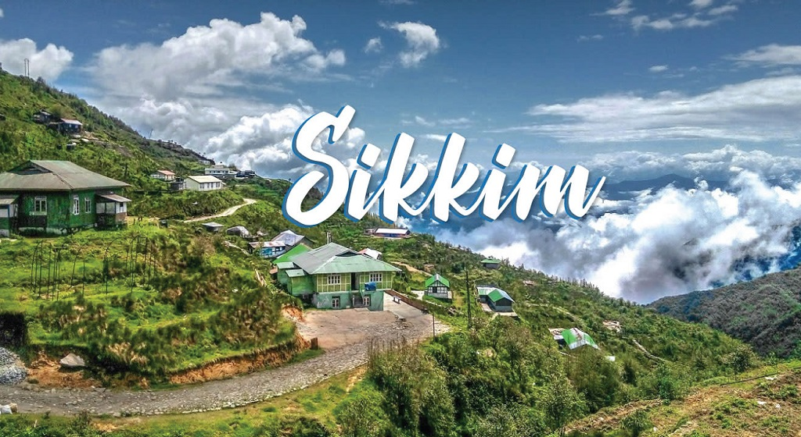
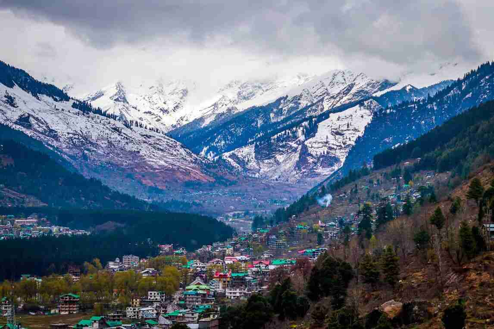
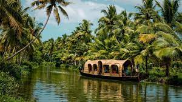
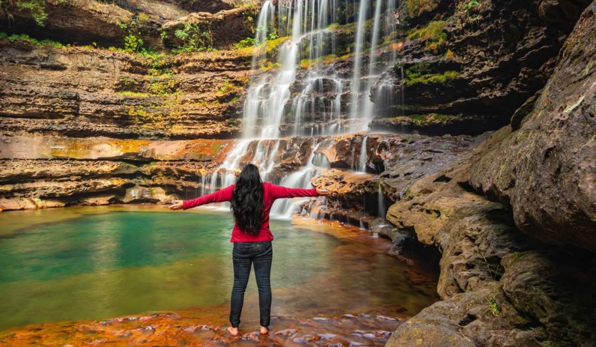
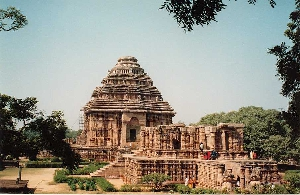
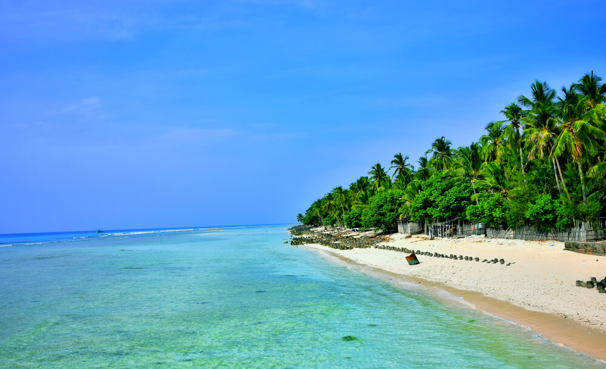

SIKKIM
Sikkim has a diverse range of ecotourism activities, including trekking, birdwatching, and nature walks.
Sikkim has a diverse range of ecotourism activities, including trekking, birdwatching, and nature walks.

HIMACHAL PRADESH
Himachal Pradesh also has several trekking trails and adventure activities such as river rafting, skiing, and paragliding, attracting adventure enthusiasts.
Himachal Pradesh also has several trekking trails and adventure activities such as river rafting, skiing, and paragliding, attracting adventure enthusiasts.

KERELA
The backwaters of Kerala are also a major attraction for eco-tourists, with opportunities for canoeing, kayaking, and boat rides, all of which provide an up-close look at the local ecosystem.
The backwaters of Kerala are also a major attraction for eco-tourists, with opportunities for canoeing, kayaking, and boat rides, all of which provide an up-close look at the local ecosystem.
 NAGALAND
NAGALANDThe state has several national parks and wildlife sanctuaries, including Intanki, Fakim, and Puliebadze Wildlife Sanctuaries.

MEGHALAYA
Meghalaya is an eco-friendly state in northeast India that is gaining popularity as a tourist destination.
Meghalaya is an eco-friendly state in northeast India that is gaining popularity as a tourist destination.
 WEST BENGAL
WEST BENGALWest Bengal is a popular eco-friendly destination in India with natural beauty and wildlife.
 ASSAM
ASSAMAssam is known for its natural beauty and varied flora and fauna.

ORISSA
Orissa has 5 national parks, 18 wildlife sanctuaries, and numerous other protected areas that are home to a diverse range of flora and fauna.
Orissa has 5 national parks, 18 wildlife sanctuaries, and numerous other protected areas that are home to a diverse range of flora and fauna.

LAKSHADWEEP
Lakshadweep, the group of 36 islands is known for its exotic and sun-kissed beaches and lush green landscape.India's smallest Union Territory Lakshadweep is an archipelago consisting of 36 islands.
Lakshadweep, the group of 36 islands is known for its exotic and sun-kissed beaches and lush green landscape.India's smallest Union Territory Lakshadweep is an archipelago consisting of 36 islands.